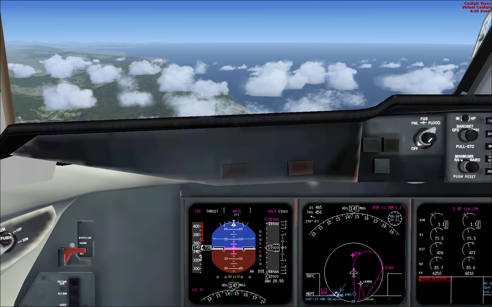

PMDG MD-IIX Review
by Don Filer
Posted on January 1, 2019 at 12:00 PM
The McDonnnel Douglas MD-11X from PMDG is the most complete and realistic simulator aircraft I have ever flown. I cannot imagine any detail left out or overlooked by this plane’s designers.
The MD-11 was launched on December 30, 1986 by the McDonald-Douglas Aircraft Company. The first flight was on January 10, 1990. Certification occurred November 8, 1990, with first delivery on December 7. The MD-11 is 18.6 feet (5.66 m) longer than the earlier DC-10 trijet, and carries about 50 more passengers. The MD-11 offers a highly sophisticated flight deck and advanced automatic system controls that substantially reduces pilot workload. It was produced in Long Beach, California, at the Douglas Products Division of the Boeing Commercial Airplane Group before it went out of production.
Packaging
PMDG which stands for Precision Manuals Development Group not Products Made Darned Good is a company based in Carson City, Nevada who has teamed up with Aerosoft GmbH, a German distributor of Flight Simulator add on products. The MD-11 is their first collaborative effort and comes only on a CD in a shrink wrap package with 2 printed manuals. One is the 74 page Introduction and Pilot’s Operation Guide and the other is the 81 page flight Tutorial from London, Heathrow to Zurich.
Documentation
PMDG/Aerosoft also includes Adobe files of the MD-11 Checklists, Flight Crew Operating Manual, Flight Management Systems (FMC), Quick Reference Handbook, MD-11 Systems, as well as copies of the printed Introduction and Tutorial manuals.
You will find the documentation from PMDG to be stellar. The tutorial is the most thorough step-by-step guide I have seen for setting up and flying a complex aircraft including programming the FMC.
I confess to getting a chuckle
out of the paragraph directed at beginners. If you’re a beginner, you’ve seriously got your hands full. Aerosoft recommends on their web page that experienced simmers take on the challenges of this commercial jet simulator. The introduction
also describes a variety of failures you may add to your simulator which underscores the experience level of the target audience. I have enough problems getting the plane in the air and on course; I didn’t need any more problem scenarios
but if setting it up and getting from departure to destination isn’t enough, you can plan for over 175 different mechanical failures.
Installation
Installing this plane is about what you might expect from a top flight professional company. You slide the CD into your drive and let the program run automatically. You will be asked for your license key which you will find on the inside of the DVD case. The installation process is automated and as long as you haven’t changed the location of your FSX, all the files will be stored in their correct locations. You will load your chosen liveries this way also and my only complaint is I couldn’t translate the shorthand names for the desired airlines. A couple were obvious like United and American Airlines but when I thought I was installing the Swiss Air livery I actually installed Saudi Airlines.
Exterior
I was flabbergasted by the shadows and reflections on the engines and the level of detail on the skin of this bird. With both passenger and cargo configurations and more liveries than you can shake a stick at you won’t be disappointed here; 46 liveries with Pratt and Whitney engines and 41 liveries with GE engines. The textures on these repaints are flawless giving McPhat a run for their money in workmanship and pure eye candy.

Interior
If you follow the tutorial you’ll get plenty of exposure to the 2D cockpit layout and all the places to click to get the varied panels to open up. From the overhead to the main throttle, you will be able to switch from each panel effortlessly. If you’re a Virtual Cockpit kind of simmer you won’t be disappointed either since you probably know where each panel is and can access them by moving your viewpoint with the mouse or joystick. By pressing alpha key “a” you can cycle through the inside (and outside) views providing eye-level viewpoints of both pilot and first officer. Of special note is the addition of dynamic menus on the menu bar allowing access to options unique to PDMG’s MD-11 like fuel settings and European or US weights and display options. Again, the graphic detail in the cockpit is extraordinary. the labels are clear and every button and knob is well designed throughout.
Sound
The MD-11 is powered by three high bypass ratio turbofan engines and you can hear the difference between the two engine models; the Pratt and Whitney PW 4460 or PW 4462 and the General Electric CF6-80C2. In addition to incredibly realistic sound both inside and outside the cabin, PMDG also suggests simulator settings for the most realistic results as well as extra radio knobs on the dynamic menu bar for fine tuning the audio. Much consideration was given to the way things look and sound with input from actual MD-11 pilots. The copilot’s announcements are pivotal to making the flight experience true -to-life. You will soon expect to hear your first officer say, “V1,” “Rotate,” and “Positive rate of climb,” on every flight as well as announcing: flaps, and landing gear positions making it easier to do your job of flying the aircraft.
Flight Characteristics
The MD-11 is a delightful airplane to fly. It reminds me of the flight characteristics of the simulator Airbus 320 especially on takeoff and climb out. After liftoff, the nose stays pitched up without back pressure on the yoke which I find very satisfying as it allows me to use my hands to bring up the gear and adjust the flaps before selecting the autopilot. In manual flight, the MD-11 is very responsive and makes its maneuvers smoothly providing the passengers a comfortable ride. On final approach it flares and glides to the ground gracefully although I confess to running out of runway on my first two or three flights. I was so astounded with my success, probably coming in too fast, and just couldn't stop in time.
One of the things that interested me about the MD-11 is that I seemed to recall a few accidents of this model. Actually the MD-11 had far fewer accidents than many other aircraft types and that may have been because fewer were ever built. The MD-11 was designed with a smaller horizontal stabilizer than other airliners. That, plus the shifting of its center of gravity further aft, all to reduce drag and thus fuel burn caused it to be unusually light on the controls. This design, known as relaxed stability, is common to fighter planes but is not normally found in the pitch axis of a civilian airliner. It makes it more likely that the pilot will over control during a recovery attempt after a high altitude upset which has occurred in the past. The other accident that happened more than once is the plane bounced on landing and became inverted before coming to rest.

Flight Management System (FMC)
The Flight Management Computer is a joy to work with and after a couple of tours through the tutorial you 'll quickly get the hang of it too. PMDG provides an external program for selecting passenger or freight configurations in kilograms
or pounds which result in weight computations you need to program the FMC. Fuel may be added through the dynamic menus and the FMC uses these weights as well as temperature to compute V1, V2, and VR speeds for takeoff as well as cruise
flight speed and cruise altitude factoring in the Cost Index and desired fuel economy. Simply by entering the departure and destination airport ICAO codes, the FMC can calculate the basic flight route allowing you to add SIDs and STARs
and departure and destination runways. You may have to clear any flight discontinuities on the FMC but adding waypoints or changing the flight plan is quite easy.
T he navigation data from which the FMC gets its information is current with complete data for runways long enough to accommodate the MD-11 for the year 2009. The FMC works in conjunction with the Inertial Reference System
and the IRSs can be set to align themselves instantly, in 15 seconds or in the customary 10 minutes by making a change in the aircraft options of the dynamic menu. I also got a kick out of the pushback sequence between the pilot and
the ground crew which is affected through the FMC Menu button. You can decide how far back and at what angle either left or right you want the aircraft to go. Cabin and cargo doors are also opened and closed through the FMC menu shortcuts
and this is another way you may refuel the airplane.
Performance
If you’re accustomed to just load-and-go flying, you may be in for a surprise. While you can get this bird off the ground without setting it up properly, you probably won’t get very far before realizing there’s more here that must be addressed before just taking off. While the sales literature describes the system requirements to be pretty average, you may have difficulties on longer flights with less than 6 GB of RAM and a 64 bit operating system. While I was able to complete the tutorial on the 5th try, it was after running out of memory and crashing to the desktop on several occasions. To avoid this I reduced the demands on the graphics settings of my simulator and subsequently upgraded from 3 GB of RAM and 32 bit Vista Home Premium to my current configuration listed at the end of this article. I have also gleaned from some of the forums that the level of complexity on this simulator aircraft is just too great for some simmers. They are not keen on having this much realism or demands on their setup time and I have to admit it is frustrating to spend 45 minutes getting the flight deck ready just to have the program crash before takeoff.
Pros and Cons
I was delighted with the way PMDG uses a centralized panel in the 2D cockpit for engines, hydraulics, electrical, fuel, air, configuration, miscellaneous and status access and reporting. When the caution button lit up I just accessed the central panel with one click and any system problems were highlighted and could be addressed immediately. I didn't have to fumble around looking everywhere and then looking up the error code in the manual to figure out what the anomaly was and how to correct it. One of the best features in this simulator aircraft is an option to pause at the Top of Decent which allows you to take off from Beijing on a long flight to London and you can do something else while the plane traverses the globe. You can climb back into the pilot's seat at your leisure and prepare for your landing without missing a beat. On the other hand, the demands of more memory and therefore increased operating system capability make this acquisition significantly more demanding on the pocket book. Price is frequently an issue and at $79 you definitely get a whole lot of airplane for your money.
Conclusion
When I first installed the MD-11 from PMDG I recalled the first Consumer Electronics Show I went to in Chicago years ago. I was so overwhelmed I thought I'd died and gone to heaven. This product is a true keeper and I will not be at all surprised if it wins many awards of excellence in several different categories. I highly recommend the PDMG MD-11 for anyone who is serious about flight simulation or who wants the challenges real pilots of commercial airliners face every day.